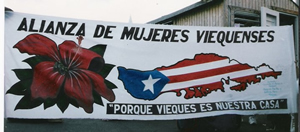
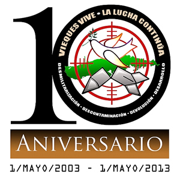
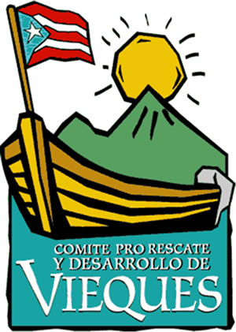

Today we celebrate the 10th anniversary of the closing of the U.S. Navy bombing range in Vieques, Puerto Rico. During six decades prior to 2003, approximately one trillion pounds of explosives were dropped in practice exercises.
After decades of protest and a campaign of non-violent civil resistance that began in 1999 and included the arrests of over 1,500 people, the Navy was forced to close the bombing range on May 1, 2003. Peace-loving people had defeated the most powerful military force in history without firing a single shot.
FOR played a role in this historic struggle, by organizing international delegations to Vieques, publishing reports and newsletters, organizing protests, speaking tours, and a conference in Washington, and mobilizing for the closure of the bombing range and declaration as a Superfund cleanup site.
Presidential candidate Obama wrote to the Governor of Puerto Rico in 2008: "We will closely monitor the health of the people of Vieques and promote appropriate remedies to health conditions caused by military activities conducted by the U.S. Navy on Vieques."
But that promise remains unfulfilled. The Navy's presence and the environmental disaster it created continue to afflict Vieques.
Please click here to join us in submitting some very reasonable demands from the people of Vieques to the Pentagon, Congress, and the White House.
And please forward this email widely to like-minded friends.
Background:
Issue Brief: Health in Vieques: A Crisis and its Causes, by Cruzmaria Nazario, Deborah Santana and John Lindsay-Poland, 2002
Helen Jaccard and David Swanson: "Vieques Vive La Lucha Continua 10 years after the bombing stopped"
Vieques: A Target in the Sun, report by George Withers, Washington Office on Latin America, May 1, 2013
Robert Rabin Siegal: "Dear Mr. President"
Helen Jaccard: "Interview of Lydia Ortiz"
Helen Jaccard: "Interview of Carlos Prieta Ventura"
Allies:




|